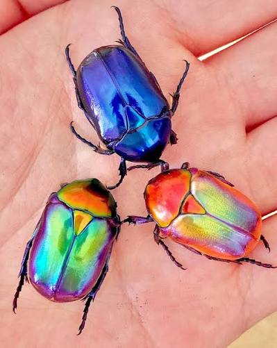

01

🦋 Borboleta
As borboletas são conhecidas por suas asas delicadas e pelos incríveis desenhos e cores que apresentam.
✿ UM PEQUENO MUSEU DA NATUREZA ✿
Uma viagem pelo mundo dos insetos mais coloridos
A natureza é cheia de criaturas fascinantes. Algumas delas parecem verdadeiras obras de arte! Conheça quatro insetos conhecidos por suas cores, formas e padrões encantadores.
As borboletas são conhecidas por suas asas delicadas e pelos incríveis desenhos e cores que apresentam.

Existem besouros com cores metálicas, brilhantes e extremamente variadas, parecendo pequenas joias da natureza.

Pequenas e encantadoras, as joaninhas chamam atenção por suas cores vibrantes e seus característicos desenhos.

Muitas mariposas possuem padrões impressionantes, com cores e formas que ajudam na camuflagem e proteção.
Observe os pequenos detalhes. Eles podem esconder as maiores belezas.